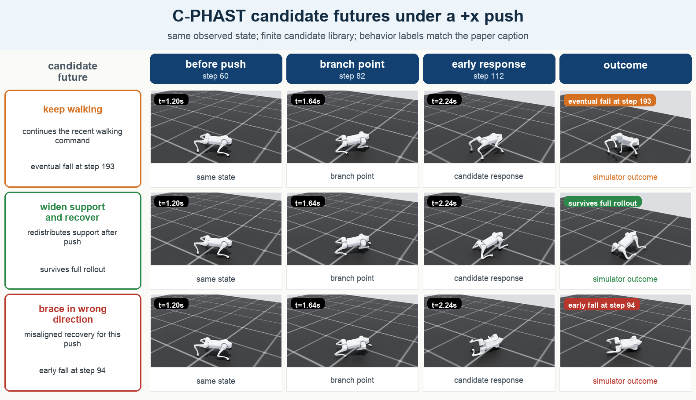
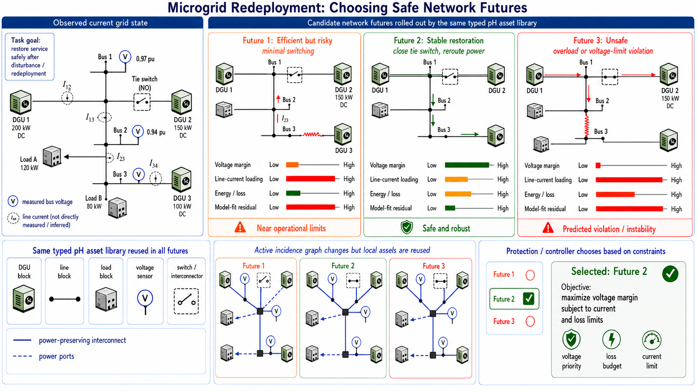

Fast but risky
Low energy and low support, but near the stability boundary.
Compositional Port-Hamiltonian World Models for Structured Dynamics Transfer
One observed state. Multiple possible futures. Typed physics tells you what each future costs.
C-PHAST composes reusable port-Hamiltonian blocks into a deployed world model. It rolls out candidate futures and exposes energy, support, stability, and residual readouts for downstream planners.
One state, three futures
The same learned typed block library can be queried under different candidate actions or contact patterns. Each rollout returns a physical commitment profile.

Low energy and low support, but near the stability boundary.
More contact and effort, but a much larger safety margin.
Residuals and stability channels predict contact failure.
Playable evidence
Four distinct checks: futures, safety, transfer, and baseline failure.
How it works
C-PHAST declares the deployment, infers typed phase state from history, reuses a shared PHASTCore library, composes under the target interconnect, and returns native typed readouts for decision layers.

Same principle beyond robots
A microgrid also changes through topology, sensors, and active assets. C-PHAST reuses typed pH asset blocks and recomposes them under a new target graph. The readouts become voltage margin, current loading, loss, and model-fit residuals.

Citation
@article{bhardwaj2026cphast,
title = {Compositional Port-Hamiltonian World Models for Structured Dynamics Transfer},
author = {Bhardwaj, Shubham and Bajaj, Chandrajit},
journal = {arXiv preprint},
year = {2026}
}